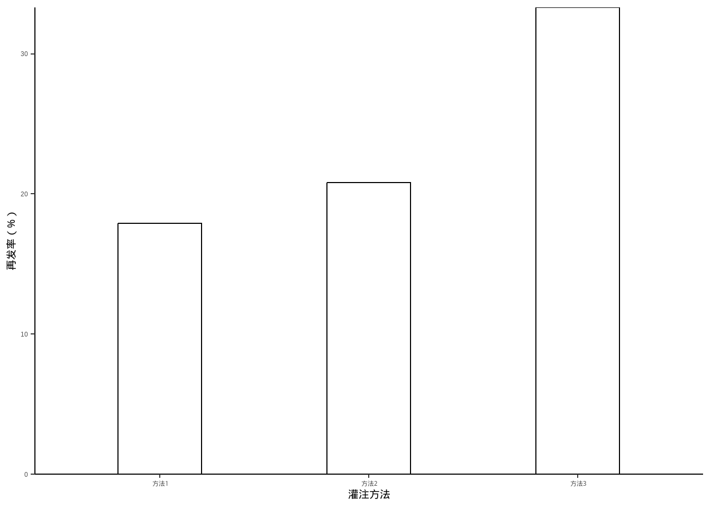
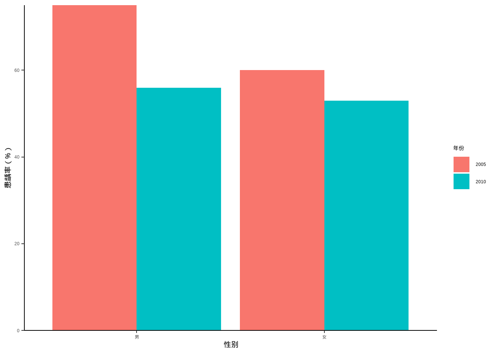
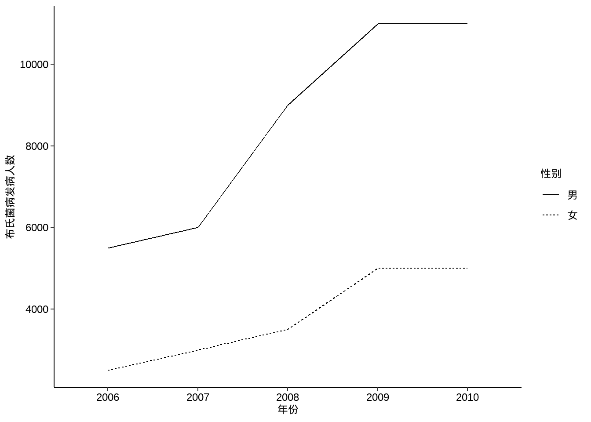
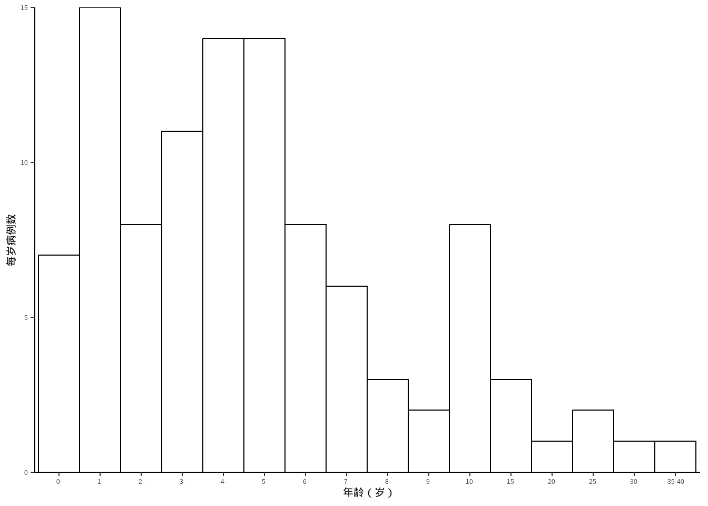

data10_4 <- data.frame(`灌注方法`=c("方法1","方法2","方法3"),
rate = c(17.9,20.8,33.3))
data10_4
## 灌注方法 rate
## 1 方法1 17.9
## 2 方法2 20.8
## 3 方法3 33.39 统计绘图
统计绘图是介绍各种常用的统计图形，比如：条形图、箱线图、直方图、饼图、茎叶图、地图等。
统计绘图是R语言的拿手好戏，下面将会给大家介绍常见的统计图表的绘制。以下图形的各种细节都可以根据自己的需要进行个性化的修改。
R语言绘图我只推荐三本书：
- 《ggplot2数据分析与图形艺术》
- 《R数据可视化手册》
- 《R绘图系统》
9.1 条形图
例10-4。条形图。
library(ggplot2)
library(ggprism)
ggplot(data10_4, aes(`灌注方法`,rate))+
geom_bar(stat = "identity",fill="white",color="black",width = 0.4)+
ylab("再发率（%）")+
scale_y_continuous(expand = c(0,0))+
theme_classic()+
theme(axis.title = element_text(color = "black",size = 15))
9.2 分组条形图
例10-5。分组条形图。
library(haven)
data10_5 <- haven::read_sav("datasets/例10-05.sav")
data10_5 <- as_factor(data10_5)
data10_5
## # A tibble: 4 × 3
## year agent rate
## <fct> <fct> <dbl>
## 1 2005 男 75
## 2 2005 女 60
## 3 2010 男 56
## 4 2010 女 53library(ggplot2)
ggplot(data10_5, aes(agent,rate))+
geom_bar(stat = "identity",aes(fill=year),position = "dodge")+
labs(x="性别",y="患龋率（%）",fill="年份")+
scale_y_continuous(expand = c(0,0))+
theme_classic()+
theme(axis.title = element_text(color = "black",size = 15))
9.3 饼图
例10-6。饼图。
data10_6 <- data.frame(`失败原因`=c("无菌性松动","感染","假体周围骨折","假体不稳定","其他"),
`数量`=c(226,52,22,17,10))
library(dplyr)
data10_6 <- data10_6 %>%
arrange(desc(`数量`)) %>%
mutate(`失败原因`=factor(`失败原因`,levels=c("无菌性松动","感染",
"假体周围骨折","假体不稳定","其他"))) %>%
mutate(prop = round(`数量` / sum(`数量`),2),
prop = scales::percent(prop))
data10_6
## 失败原因 数量 prop
## 1 无菌性松动 226 69%
## 2 感染 52 16%
## 3 假体周围骨折 22 7%
## 4 假体不稳定 17 5%
## 5 其他 10 3%由于ggplot2的大佬们普遍认为饼图是一种很差劲的图形，所以ggplot2对饼图的支持并不好。
# 默认的大概是这种程度
ggplot(data10_6, aes(x="",y=`数量`,fill=`失败原因`))+
geom_bar(stat = "identity",width = 1,color="white")+
geom_text(aes(label = prop),position = position_stack(vjust = 0.5))+
coord_polar("y", start=0)+
theme_void()
9.4 百分比条形图
例10-7。百分比条形图。
library(haven)
data10_7 <- haven::read_sav("datasets/例10-07.sav",encoding = "GBK")
data10_7 <- as_factor(data10_7)
data10_7
## # A tibble: 12 × 3
## year reason percent
## <fct> <fct> <dbl>
## 1 1996年 肺炎 23.4
## 2 1996年 早产 14.2
## 3 1996年 出生窒息 14.1
## 4 1996年 腹泻 5.6
## 5 1996年 意外窒息 4.1
## 6 1996年 其它 38.6
## 7 2000年 肺炎 19.5
## 8 2000年 早产 17
## 9 2000年 出生窒息 15.9
## 10 2000年 腹泻 4.9
## 11 2000年 意外窒息 3.7
## 12 2000年 其它 39library(scales)
ggplot(data10_7, aes(year, percent, fill=reason))+
geom_bar(stat = "identity",position = "stack",width = 0.5,color="black")+
labs(fill="",x="",y="")+
scale_y_continuous(labels = percent_format(scale = 1))+
guides(fill=guide_legend(reverse = T))+
theme_bw()+
theme(axis.text = element_text(size = 18, colour = "black"),
legend.text = element_text(size = 18, colour = "black"),
legend.position = "bottom")+
coord_flip()
#ggsave("xxxx.png",width=10,height=5,dpi=300)9.5 折线图
例10-8。折线图。
library(haven)
data10_8 <- haven::read_sav("datasets/例10-08.sav",encoding = "GBK")
data10_8 <- as_factor(data10_8)
data10_8
## # A tibble: 10 × 3
## year agent counts
## <fct> <fct> <dbl>
## 1 2006 男 5500
## 2 2006 女 2500
## 3 2007 男 6000
## 4 2007 女 3000
## 5 2008 男 9000
## 6 2008 女 3500
## 7 2009 男 11000
## 8 2009 女 5000
## 9 2010 男 11000
## 10 2010 女 5000ggplot(data10_8, aes(year,counts))+
geom_line(aes(group = agent,linetype=agent))+
labs(x="年份",y="布氏菌病发病人数",linetype="性别")+
theme_classic()+
theme(axis.text = element_text(size = 18, colour = "black"),
axis.title = element_text(color = "black",size = 18),
legend.text = element_text(size = 18, colour = "black"),
legend.title = element_text(size = 18, colour = "black"))
9.6 点线图
例10-9。点线图。
library(haven)
data10_9 <- haven::read_sav("datasets/例10-09.sav",encoding = "GBK")
data10_9 <- as_factor(data10_9)
data10_9
## # A tibble: 10 × 3
## year 病型 发病率
## <dbl> <fct> <dbl>
## 1 1997 艾滋病 0.0069
## 2 1998 艾滋病 0.0177
## 3 1999 艾滋病 0.0187
## 4 2000 艾滋病 0.0312
## 5 2001 艾滋病 0.0468
## 6 1997 梅毒 3.76
## 7 1998 梅毒 4.58
## 8 1999 梅毒 5.72
## 9 2000 梅毒 6.09
## 10 2001 梅毒 6.27p1 <- ggplot(data10_9, aes(year,`发病率`))+
geom_line(aes(group = `病型`,linetype=`病型`))+
geom_point(aes(group = `病型`,shape=`病型`),size=4)+
labs(x="年份",y="发病率（1/10万）")+
theme_classic()+
theme(axis.text = element_text(size = 14, colour = "black"),
axis.title = element_text(color = "black",size = 14),
legend.text = element_text(size = 14, colour = "black"),
legend.title = element_text(size = 14, colour = "black"))
p2 <- ggplot(data10_9, aes(year,log10(`发病率`)))+ # 不知道课本取的log几
geom_line(aes(group = `病型`,linetype=`病型`))+
geom_point(aes(group = `病型`,shape=`病型`),size=4)+
labs(x="年份",y="发病率（1/10万）")+
theme_classic()+
theme(axis.text = element_text(size = 14, colour = "black"),
axis.title = element_text(color = "black",size = 14),
legend.text = element_text(size = 14, colour = "black"),
legend.title = element_text(size = 14, colour = "black"))
library(patchwork)
p1+p2+plot_layout(guides = "collect")
9.7 直方图
例10-10。直方图。
library(haven)
data10_10 <- haven::read_sav("datasets/例10-10.sav",encoding = "GBK")
data10_10 <- as_factor(data10_10)
data10_10
## # A tibble: 16 × 2
## age count
## <fct> <dbl>
## 1 0- 7
## 2 1- 15
## 3 2- 8
## 4 3- 11
## 5 4- 14
## 6 5- 14
## 7 6- 8
## 8 7- 6
## 9 8- 3
## 10 9- 2
## 11 10- 8
## 12 15- 3
## 13 20- 1
## 14 25- 2
## 15 30- 1
## 16 35-40 1下面这个其实假的直方图（虽然和课本中的看起来差不多），因为没给原始数据，给的是计数好的数据，所以是用条形图伪装的直方图：
ggplot(data10_10, aes(age,count))+
geom_bar(stat = "identity",fill="white",color="black",
width = 1,position = position_dodge(width = 1))+
labs(x="年龄（岁）",y="每岁病例数")+
scale_y_continuous(expand = c(0,0))+
theme_classic()+
theme(axis.title = element_text(color = "black",size = 15))
9.8 地图
例10-11。地图。没给数据，直接自己编一个。
首先下载中国地图。中国地图下载地址：地图选择器
library(ggplot2)
library(sf)
library(dplyr)
china_map <- st_read("datasets/中华人民共和国.json")
## Reading layer `中华人民共和国' from data source
## `F:\R_books\medstat_quartobook\datasets\中华人民共和国.json'
## using driver `GeoJSON'
## Simple feature collection with 35 features and 10 fields
## Geometry type: MULTIPOLYGON
## Dimension: XY
## Bounding box: xmin: 73.50235 ymin: 3.397162 xmax: 135.0957 ymax: 53.56327
## Geodetic CRS: WGS 84然后给每个省编点数据：
set.seed(123)
china_map <- china_map %>%
mutate(name_short=substr(name,1,2),
number = sample(10:100,35,replace=F),
group = sample(paste0("group",1:5),35,replace=T))
china_map$name_short[c(5,8)] <- c("内蒙古","黑龙江")画图即可,ggplot2画地图非常厉害，下面这个只是非常基础的，可以进行非常多的修改。
ggplot(data = china_map) +
geom_sf(aes(fill=group)) +
geom_sf_text(aes(label = name_short),nudge_y = 0,size=2)+
geom_sf_text(aes(label = number),nudge_y = -1,size=2)+
theme_minimal()
## Warning in st_point_on_surface.sfc(sf::st_zm(x)): st_point_on_surface may not
## give correct results for longitude/latitude data
## Warning in st_point_on_surface.sfc(sf::st_zm(x)): st_point_on_surface may not
## give correct results for longitude/latitude data
9.9 箱线图
例10-12。箱线图。没给数据，直接用R语言自带的iris数据演示一下。
library(ggplot2)
ggplot(iris, aes(Species,Sepal.Length))+
stat_boxplot(geom = "errorbar",width = 0.2)+
geom_boxplot()
9.10 茎叶图
例10-13。茎叶图。
library(haven)
data10_13 <- haven::read_sav("datasets/例10-13.sav",encoding = "GBK")
data10_13 <- as_factor(data10_13)
data10_13
## # A tibble: 138 × 1
## rbc
## <dbl>
## 1 3.96
## 2 3.77
## 3 4.63
## 4 4.56
## 5 4.66
## 6 4.61
## 7 4.98
## 8 5.28
## 9 5.11
## 10 4.92
## # ℹ 128 more rowsR自带函数就可以画（但是这个图很少用）：
stem(data10_13$rbc,scale = 1)
##
## The decimal point is 1 digit(s) to the left of the |
##
## 30 | 7
## 31 |
## 32 | 17
## 33 | 9
## 34 | 2
## 35 | 299
## 36 | 0124467789
## 37 | 12266679
## 38 | 3399
## 39 | 166667778
## 40 | 11122223344
## 41 | 2234666789
## 42 | 000011133345566666667888999
## 43 | 01223466666
## 44 | 12279
## 45 | 4566677
## 46 | 111366899
## 47 | 15666
## 48 | 139
## 49 | 258
## 50 | 13
## 51 | 12
## 52 | 348
## 53 |
## 54 | 69.11 误差条图
例10-14。误差条图。
library(haven)
data10_14 <- haven::read_sav("datasets/例10-14.sav",encoding = "GBK")
data10_14 <- as_factor(data10_14)
data10_14
## # A tibble: 120 × 2
## group dmdz
## <fct> <dbl>
## 1 安慰剂组 3.53
## 2 安慰剂组 4.59
## 3 安慰剂组 4.34
## 4 安慰剂组 2.66
## 5 安慰剂组 3.59
## 6 安慰剂组 3.13
## 7 安慰剂组 2.64
## 8 安慰剂组 2.56
## 9 安慰剂组 3.5
## 10 安慰剂组 3.25
## # ℹ 110 more rows先计算每个组的均值和可信区间：
95%可信区间的计算：均值±1.96*标准误，见课本第一章第三节：总体均数的估计
library(dplyr)
data10_14_1 <- data10_14 %>%
group_by(group) %>%
summarise(mm = mean(dmdz),
lower = mm - 1.96*(sd(dmdz)/sqrt(30)),
upper = mm + 1.96*(sd(dmdz)/sqrt(30)))
data10_14_1
## # A tibble: 4 × 4
## group mm lower upper
## <fct> <dbl> <dbl> <dbl>
## 1 安慰剂组 3.43 3.17 3.69
## 2 新药2.4 2.72 2.49 2.94
## 3 新药4.8 2.70 2.52 2.88
## 4 新药7.2 1.97 1.70 2.23ggplot(data10_14_1)+
geom_point(aes(group,mm),size=4,shape=0)+
geom_errorbar(aes(x=group,ymin=lower,ymax=upper),
width=0.1)+
theme_classic()+
labs(x="分组",y="95%CI")+
theme_classic()+
theme(axis.title = element_text(color = "black",size = 15))